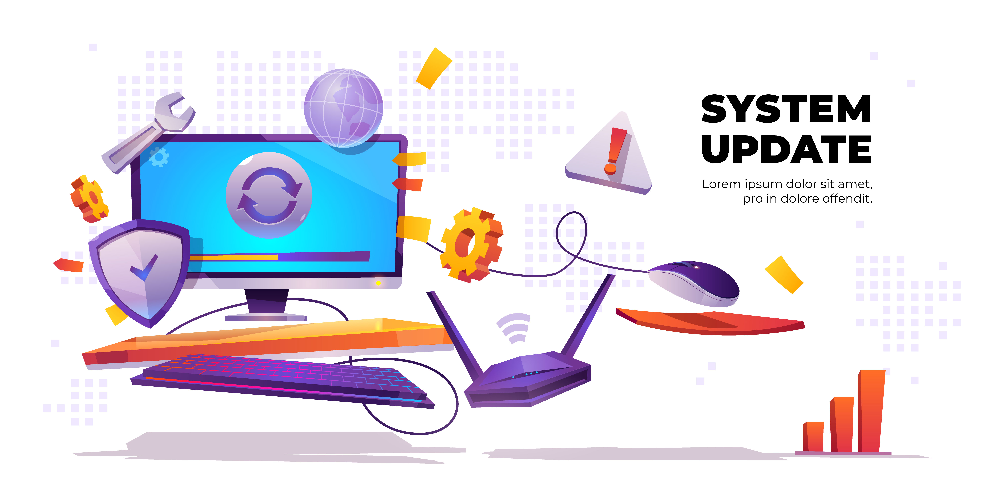

Web Development
We create modern, responsive websites optimized for speed and usability, including e-commerce platforms and content management systems.
At NexaTech Solutions, we offer a comprehensive range of digital services to help businesses succeed. Our developers and designers specialize in creating high-performance websites, software, and IT infrastructure tailored to your operational goals.
We create modern, responsive websites optimized for speed and usability, including e-commerce platforms and content management systems.

We build custom applications, internal tools, and automation platforms that streamline your operations and improve team efficiency.

Our IT consulting services help organizations select the right architecture, conduct security assessments, and execute digital transformations.

We provide ongoing maintenance and technical support so your digital systems remain secure, updated, and running smoothly.
| Service Category | Ideal For | Estimated Timeline | Starting Price (NGN) |
|---|---|---|---|
| Business Website | Small businesses & startups | 2 – 3 Weeks | ₦250,000 |
| Custom Web Application | Growing enterprises & SaaS | 6 – 10 Weeks | ₦850,000 |
| IT Infrastructure Audit | Established organizations | 1 – 2 Weeks | ₦150,000 |
| Monthly Retainer Support | All active digital platforms | Ongoing (Monthly) | ₦75,000 / mo |